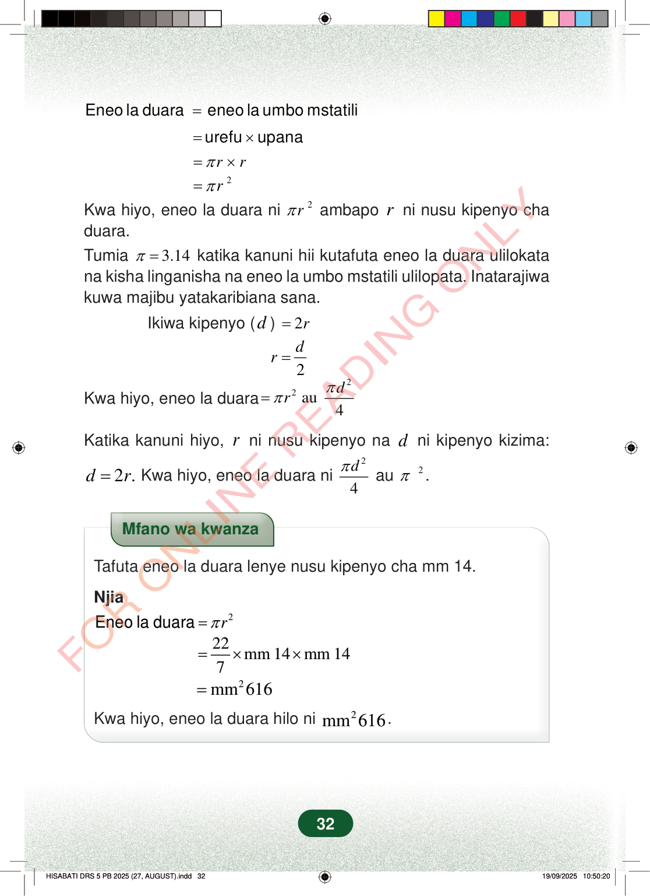

=Eneo la duaraeneo la umbo mstatili=×urefuupanarrπ=×2rπ=Kwa hiyo, eneo la duara ni2rπambaporni nusu kipenyo chaduara.Tumia3.14π=katika kanuni hii kutafuta eneo la duara ulilokatana kisha linganisha na eneo la umbo mstatili ulilopata. Inatarajiwakuwa majibu yatakaribiana sana.Ikiwa kipenyo (d)2r=2dr=Kwa hiyo, eneo la duara22au4drππ=Katika kanuni hiyo,rni nusu kipenyo nadni kipenyo kizima:22.dr=Kwa hiyo, eneo la duara ni4dπau2π.Mfano wa kwanzaTafuta eneo la duara lenye nusu kipenyo cha mm 14.Njia2rπ=Eneo la duara22mm 14mm 147=××2mm616=Kwa hiyo, eneo la duara hilo ni2mm616.32
= Eneo la duara eneo la umbo mstatili
= × urefu upana
r r π = ×
2 r π =
Kwa hiyo, eneo la duara ni
2 r π ambapo r ni nusu kipenyo cha duara. Tumia 3.14 π = katika kanuni hii kutafuta eneo la duara ulilokata na kisha linganisha na eneo la umbo mstatili ulilopata. Inatarajiwa kuwa majibu yatakaribiana sana.
Ikiwa kipenyo ( d ) 2 r =
2 d r =
Kwa hiyo, eneo la duara
2 2 au 4 d r π π =
Katika kanuni hiyo, r ni nusu kipenyo na d ni kipenyo kizima:
2
2 . d r = Kwa hiyo, eneo la duara ni
4 d π au 2 π .
Mfano wa kwanza
Tafuta eneo la duara lenye nusu kipenyo cha mm 14.
Njia
2 r π = Eneo la duara
22 mm 14 mm 14 7 = × ×
2 mm 616 = Kwa hiyo, eneo la duara hilo ni 2 mm 616 .
32
Eneo la duara = eneo la umbo mstatili<math><mrow><mo>=</mo><mtext>urefu</mtext><mrow><mspace width="0.222em"></mspace><mo>×</mo><mspace width="0.222em"></mspace></mrow><mtext>upana</mtext></mrow></math><math><mrow><mo>=</mo><mi>π</mi><mi>r</mi><mo>×</mo><mi>r</mi></mrow></math><math><mrow><mo>=</mo><mi>π</mi><msup><mi>r</mi><mn class="tml-sml-pad">2</mn></msup></mrow></math>Kwa hiyo, eneo la duara ni <math><mrow><mi>π</mi><msup><mi>r</mi><mn class="tml-sml-pad">2</mn></msup></mrow></math> ambapo <math><mi>r</mi></math> ni nusu kipenyo cha duara.Tumia <math><mrow><mi>π</mi><mo>=</mo><mn>3.14</mn></mrow></math> katika kanuni hii kutafuta eneo la duara ulilokata na kisha linganisha na eneo la umbo mstatili ulilopata.Inatarajiwa kuwa majibu yatakaribiana sana.Ikiwa kipenyo <math><mrow><mo fence="true" form="prefix" stretchy="false">(</mo><mi>d</mi><mo fence="true" form="postfix" stretchy="false">)</mo></mrow></math> = <math><mrow><mn>2</mn><mi>r</mi></mrow></math>r = \dfrac{d}{2}Kwa hiyo, eneo la duara = <math><mrow><mi>π</mi><msup><mi>r</mi><mn class="tml-sml-pad">2</mn></msup></mrow></math> au <math><mstyle displaystyle="true" scriptlevel="0"><mfrac><mrow><mi>π</mi><msup><mi>d</mi><mn class="tml-lrg-pad">2</mn></msup></mrow><mn>4</mn></mfrac></mstyle></math>Katika kanuni hiyo, <math><mi>r</mi></math> ni nusu kipenyo na <math><mi>d</mi></math> ni kipenyo kizima:<math><mrow><mi>d</mi><mo>=</mo><mn>2</mn><mi>r</mi></mrow></math>.Kwa hiyo, eneo la duara ni <math><mstyle displaystyle="true" scriptlevel="0"><mfrac><mrow><mi>π</mi><msup><mi>d</mi><mn class="tml-lrg-pad">2</mn></msup></mrow><mn>4</mn></mfrac></mstyle></math> au <math><mrow><mi>π</mi><msup><mi>r</mi><mn class="tml-sml-pad">2</mn></msup></mrow></math>.Mfano wa kwanza unaonyesha namna ya kupata eneo la duara lenye nusu kipenyo cha milimita 14. Hesabu zinaonyesha kuwa eneo ni milimita za mraba 616.Mfano wa kwanzaTafuta eneo la duara lenye nusu kipenyo cha mm 14.Njia<math><mrow><mtext>Eneo la duara</mtext><mo>=</mo><mi>π</mi><msup><mi>r</mi><mn class="tml-sml-pad">2</mn></msup></mrow></math><math><mrow><mo>=</mo><mstyle displaystyle="true" scriptlevel="0"><mfrac><mn>22</mn><mn>7</mn></mfrac></mstyle><mo>×</mo><mtext>mm </mtext><mn>14</mn><mo>×</mo><mtext>mm </mtext><mn>14</mn></mrow></math><math><mrow><mo>=</mo><msup><mtext>mm</mtext><mn>2</mn></msup><mspace width="0.1667em"></mspace><mn>616</mn></mrow></math>Kwa hiyo, eneo la duara hilo ni <math><mrow><msup><mtext>mm</mtext><mn>2</mn></msup><mspace width="0.1667em"></mspace><mn>616</mn></mrow></math>.